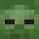

Spelupplägg · 0.2.1
Stammar och förmågor
Jämför alla de tolv inbyggda formerna och deras tre förmågor.
Styrkor och svagheter
| Stam | Det goda | De dåliga |
|---|---|---|
 Zombie |
|
|
|
| |
|
| |
|
| |
|
| |
|
| |
|
| |
|
| |
|
| |
|
| |
|
| |
|
|
Förmåganycklar och kostnader
R låses upp vid steg II, V vid steg III. Spetsförmågan på B behöver full form och 100 % forskning. HUD visar nedkylningar och ouppfyllda förhållanden. Ett misslyckat försök kostar ingenting.
Blaze, fantom och bi kan flyga från steg IV genom att dubbelklicka på hopp. Flyg använder hunger, och regn eller vatten grundar dem.
Förmågor genom belastning
| Stam | R | V | B (apex) |
|---|---|---|---|
| Zombie | Dött kött · Kort återhämtning och motstånd. | Markslag · Slår synliga fiender i närheten när du står på marken. | Horden · Sätter zombier i närheten på din senaste angripare; skapar inga monster. |
| Dött öga · Lyser kort upp levande varelser i närheten genom väggar. | Salva · Tre pilar i en smal solfjäder. | Pilstorm · Nio pilar i en bred solfjäder. | |
| Tryckutlösning · Skadar och knuffar bort synliga fiender i närheten. | Kamouflage · Kort osynlighet; rustning och föremål i handen syns fortfarande. | Detonation · Skadar och slungar bort synliga fiender i närheten, kostar 4 HP; förstör inga block. | |
| Språng · Hopp framåt. | Giftspott · Förgiftar ett synligt mål inom åtta block. | Kokong · Saktar ner och försvagar ett synligt mål. | |
| Blink · Blinkar till en säker punkt i blickriktningen. | Tomhetens blick · Saktar ner och försvagar ett synligt mål. | Tomhetens kollaps · Drar in synliga fiender i närheten och saktar ner dem. | |
| Vattenstöt · Rusning i blickriktningen under vatten. | Underström · Drar in synliga fiender i närheten. | Tidvattnet · Skadar och saktar ner synliga fiender i närheten. | |
| Eldklot · Ett litet eldklot. | Eldsalva · Tre eldklot i en solfjäder. | Inferno · Bränner och knuffar bort synliga fiender i närheten. | |
| Vingslag · Vingslag uppåt och kort långsamt fall. | Nattslöja · Kort osynlighet i mörker; utrustningen syns fortfarande. | Störtdykning · Störtdykning mot ett synligt mål; skada bara vid kontakt. | |
| Vingslag · Vingslag uppåt och kort långsamt fall. | Gadd · Förgiftar ett synligt mål inom tre block; kostar 1 HP. | Svärmen · Sätter bin i närheten på din senaste angripare; skapar inga monster. | |
| Väderkorn · Lyser kort upp levande varelser i närheten genom väggar. | Hoppande bett · Språng mot ett synligt mål; bett bara vid kontakt. | Flocken · Sätter vargar i närheten på din senaste angripare; skapar inga monster. | |
| Raseri · Kort styrka och snabbhet. | Anfall · Anfall från marken mot ett synligt mål; skada bara vid kontakt. | Krigsflock · Sätter piglins i närheten på din senaste angripare; skapar inga monster. | |
| Sonar · Lyser kort upp levande varelser i närheten genom väggar. | Stråle · Skadar ett synligt mål inom sexton block. | Den äldres förbannelse · Skadar, saktar ner och tröttar ut synliga fiender i närheten. |